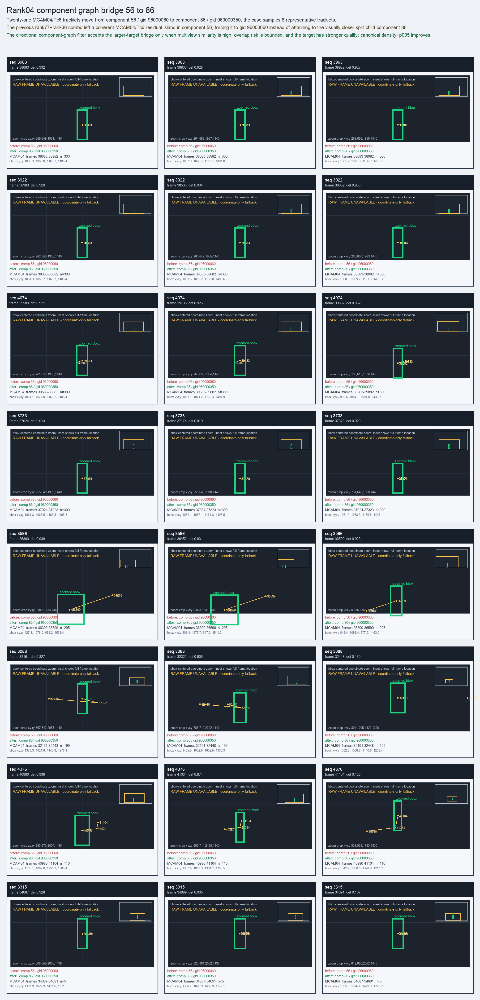

Rank04 component graph bridge 56 to 86
Twenty-one MCAM04/Tc6 tracklets move from component 56 / gid 96000060 to component 86 / gid 960000350; the case samples 8 representative tracklets.
Before
component 56, gid 96000060, component_size 21
component 56, gid 96000060, component_size 21
After
component 86, gid 960000350, component_size 128, decision_status manifest_reassign
component 86, gid 960000350, component_size 128, decision_status manifest_reassign
Evidence
target_sim=0.7980, target_margin=0.2883, source_rest_margin=0.2883
Raw frame
unavailable_coordinate_fallback
target_sim=0.7980, target_margin=0.2883, source_rest_margin=0.2883
Raw frame
unavailable_coordinate_fallback
Failure and fix
Old failure: The previous rank77+rank36 combo left a coherent MCAM04/Tc6 residual island in component 56, forcing it to gid 96000060 instead of attaching to the visually closer split-child component 86.
New implementation: The directional component-graph filter accepts the larger-target bridge only when multiview similarity is high, overlap risk is bounded, and the target has stronger quality; canonical density+p005 improves.
BBox evidence

Moved tracklets
| seq | video | gid | component | frames | dets |
|---|---|---|---|---|---|
| 3963 | vlincs_MS01_MC0001_MCAM04_2024-03-Tc6 | 96000060 -> 960000350 | 56 -> 86 | 38683-38982 | 300 |
| 3922 | vlincs_MS01_MC0001_MCAM04_2024-03-Tc6 | 96000060 -> 960000350 | 56 -> 86 | 38383-38682 | 300 |
| 4074 | vlincs_MS01_MC0001_MCAM04_2024-03-Tc6 | 96000060 -> 960000350 | 56 -> 86 | 39583-39882 | 300 |
| 3733 | vlincs_MS01_MC0001_MCAM04_2024-03-Tc6 | 96000060 -> 960000350 | 56 -> 86 | 37024-37323 | 300 |
| 3596 | vlincs_MS01_MC0001_MCAM04_2024-03-Tc6 | 96000060 -> 960000350 | 56 -> 86 | 36300-36599 | 295 |
| 3088 | vlincs_MS01_MC0001_MCAM04_2024-03-Tc6 | 96000060 -> 960000350 | 56 -> 86 | 32161-32448 | 199 |
| 4376 | vlincs_MS01_MC0001_MCAM04_2024-03-Tc6 | 96000060 -> 960000350 | 56 -> 86 | 40980-41104 | 110 |
| 3315 | vlincs_MS01_MC0001_MCAM04_2024-03-Tc6 | 96000060 -> 960000350 | 56 -> 86 | 34687-34691 | 5 |